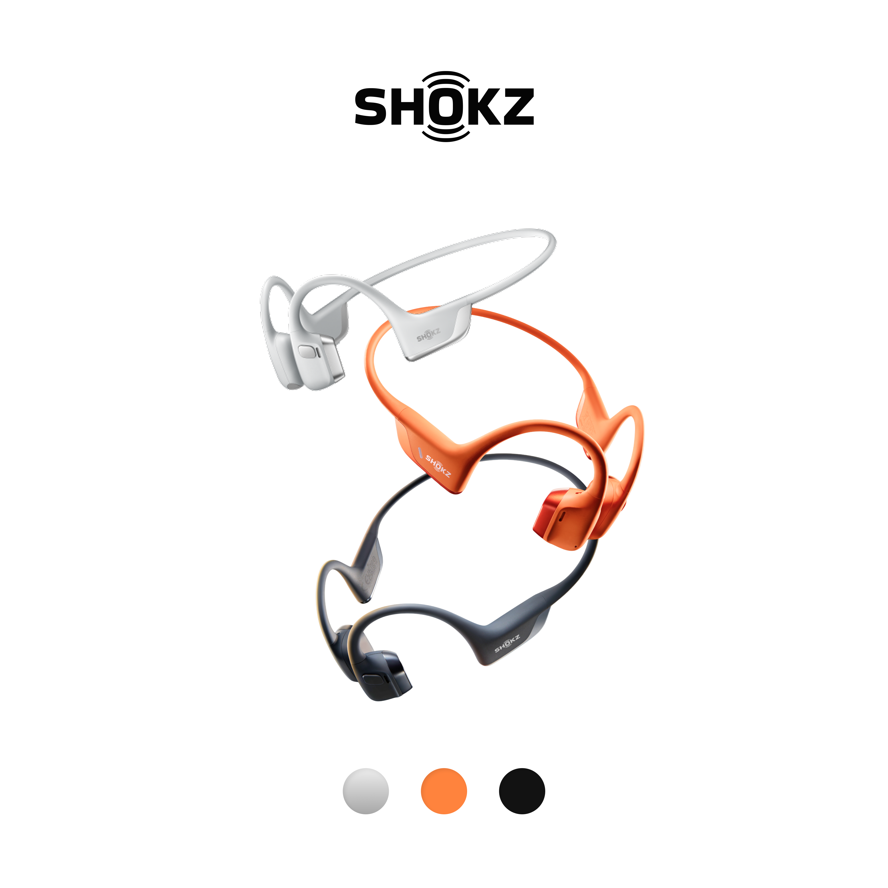

Han River Running Crew Tested · Oct 2026
Shokz OpenRun Pro 2 & Nike Initiator Review: Why Korea’s Running Crew Trend Is Obsessed With This Combo
Walk along Seoul’s Banpo Hangang Park or Pyeongtaek’s riverside trails at 8 PM and you’ll spot the exact same two-piece uniform on every runner: DualPitch open-ear audio paired with silver-mesh retro cushioning. We logged 120 km in both to see if the hype holds up.